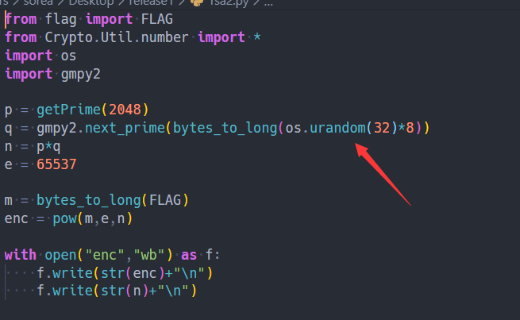
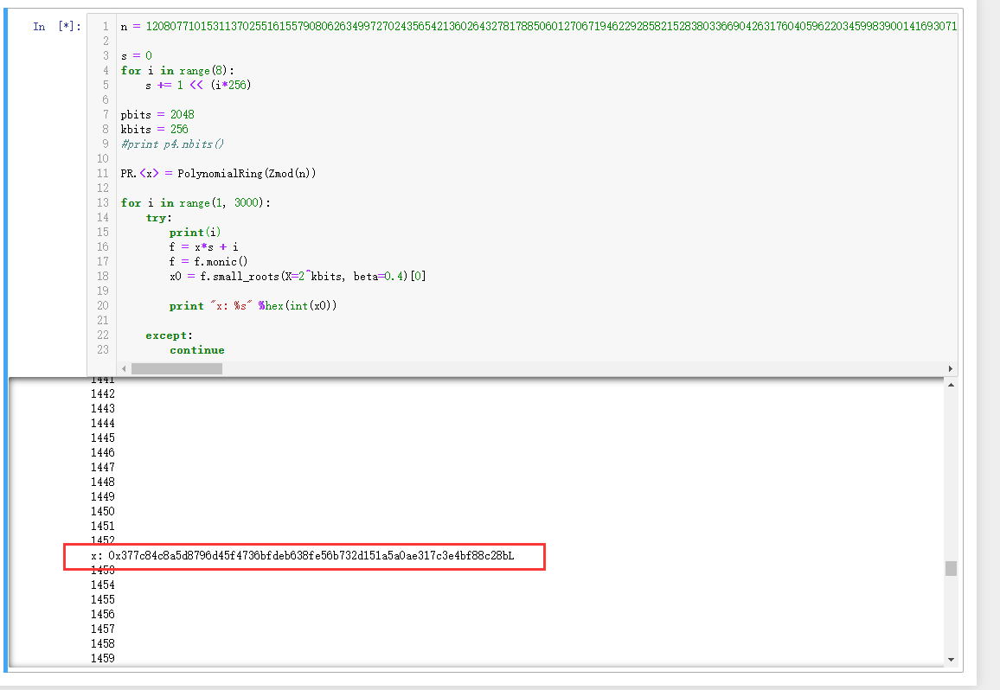
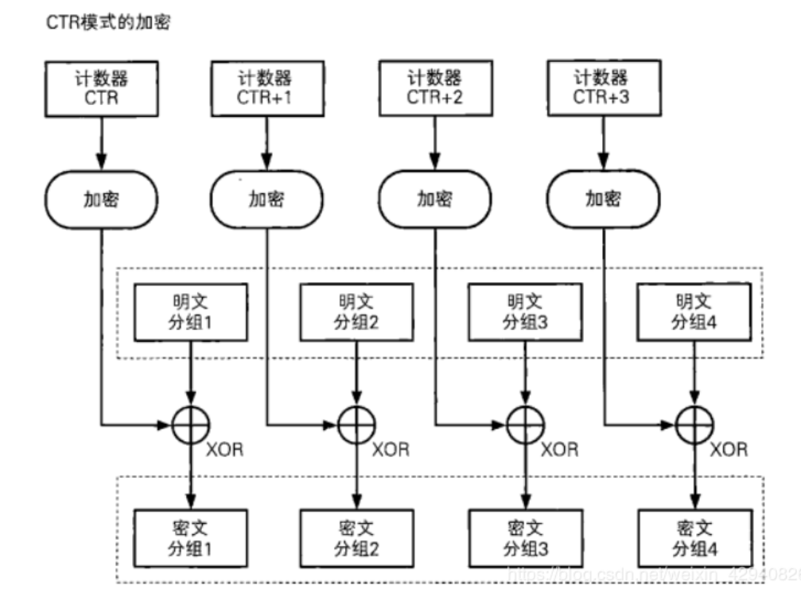
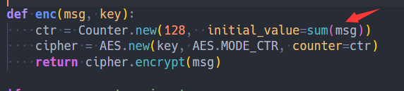
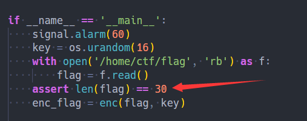
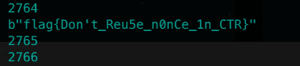
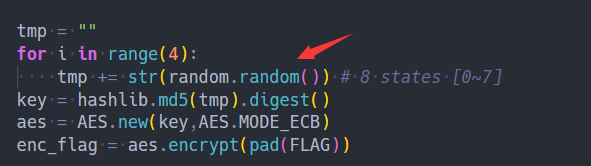
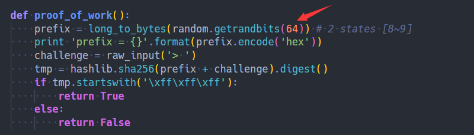
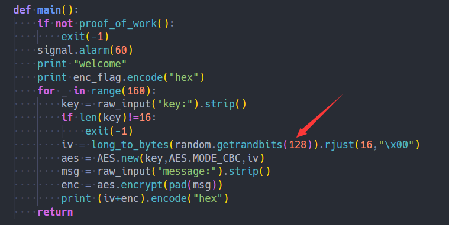
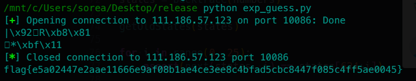

令x = p的前200个数字, y = p的后200个数字，那么：
xxxxxxxxxx31p = x * 10**200 + y2q = y * 10**200 + x3n = p*q = x*y * 10**400 + (x**2+y**2) * 10**200 + x*y
仔细估量一下n展开为x,y后，各项的位数。
xxxxxxxxxx5110**199 < x < 10**200, 10**199 < y < 10**2002310**398 < x*y < 10**400,452 * 10**398 < x**2 + y**2 < 2 * 10**400
观察到n的低200个数字仅由x*y的低200构成；n的高600个数字由x*y的高200组成（有可能会有x**2 + y**2溢出来的一个1）。
这样，我们就可以将x*y的低200和高200求出，合起来就是x*y。
然后用n减去x*y * 10**400 + x*y就是(x**2 + y**2) * 10**200。
两个未知量，两个方程，可以求出x,y。
xxxxxxxxxx291from Crypto.Util.number import *2import gmpy234n = 211730643045749508437374464091920918444108583544078533915182198285858095755464804639803545294125307856254738002106612760754732439125780326368457468669079914008221009393092549887981398190748754646128133853474875714499852430238864733718112694446181925952453800641624130312549811463546679838906070676516943105284895688821797527000692482663419279800533599110752956683422994063067478059256865734197564060950391628474751589200693258988993182223966093936852376071836680148201885223300056080373868739264321310811615310886566664024640627419340075627573392190556431987156434426089103519948727403435665828088310667360885273337620112632735330655404841059640874240306176023365984796115696110187085300245910230152678125456974783783488668404345514771268562617675352090920478101943870336432743333039264233700625723015c = 163960232853240390095581959628520408682438079710277965995803514148036757539331200240778865017369870106588124359040227502695414566412568870797805857290546810259216990441399270866764791282324994168350510902404582362808510635890590691816388021917179115999408977972350388388273227372075841881237094130775352010993250991107461967024217785889880494426046552436048527277913493512917212305779337946270153692133391505864185244734652343754204483409813300492059332917056015632831964098464084650614380010101418913977380664205241196385249089583314066986795448963513765945838836016120867388349891750703177816902171647736579395896914765396133432894317271036928990027583739298150899045741905119786800848311833286811044675537138887629659768960134045183161282885200169348281766744825456603233585942117944616246221168366e = 6553778high = n // 10**6009low = n % 10**2001011# Note: high-1 to truncate the overflow from x**2 + y**212xy = int(str(high-1) + str(low))13x2y2 = (n - xy * 10**400 - xy) // 10**200 # x^2 + y^214x_y = gmpy2.iroot(x2y2 + 2*xy, 2)[0] # x+y1516root = gmpy2.iroot(x_y**2 - 4*xy, 2)[0]17x = (x_y + root) // 218y = xy // x19assert(x+y == x_y)2021p = int(str(x) + str(y))22q = int(str(y) + str(x))23assert(p*q == n)242526d = inverse(e, (p-1)*(q-1))27m = pow(c, d, n)28print(long_to_bytes(m))29# flag{637c3dda0a943c9e837ede64cba71cbcf8e0be7bb1ca9ea1de8b9aa589ce703f}flag{637c3dda0a943c9e837ede64cba71cbcf8e0be7bb1ca9ea1de8b9aa589ce703f}

q的构造很有问题！
如果我们令x = os.urandom(32)，那么q实际上等于x + (x<<256) + (x<<512) + ... + （x<<1792) + b，其中b就是由next_prime产生的一个很小的正数。
根据素数定理，b大概在ln(2**2048) = 1420左右。
可以将上式中的x提取出来，那么x的系数s = 1 + 2**256 + 2**512 + ... + 2**1792。
这样的话，q就可以表示为q = s*x + b。
b可以穷举，未知量就只剩下这个256位（32字节）的x。
类似已知q的高位，可以直接算出分解q。
这里未知量仅256位，满足small_root的条件，可以利用Coppersmith attack。
具体sage脚本如下：
xxxxxxxxxx231n = 12080771015311370255161557908062634997270243565421360264327817885060127067194622928582152838033669042631760405962203459983900141693071596806601677251632217084723261345038741887915168091958340773339828047524497019666024630375539065444548398880616399794396004520230017032103363288470673201387325653978902755290058766642237094875084253653392393565687596599127273155853358189763359245815585997232370927890528972944524101435731581304874049635515732221747902499780876670878303416962635165848363498529435597577825630462295691162233408142135213205137186960881859171766111118928540735190002189345743989922154256763090900493060252890125542906425825595309179935680789650801679862787877849186656762228152844180705606215264812276959690561753283964581187124295553449100354445000295774826570230603102267618106166983169362812095250857025244630860711809714244091157413124938125326716830930296896617820357210306404232565500770772084743203365254536439023567089428828836995644579744664886219204425972001070305759906846734801482287141716294659811009999080084992266480138310843716928200580301372966320929189536596448711363247163124367619675005439001410192009821626429073468925267722168751270589516218562015477844846714537461267688316039704467238234341986723# calculating s4s = 05for i in range(8):6 s += 1 << (i*256)789kbits = 2561011PR.<x> = PolynomialRing(Zmod(n))1213for i in range(1, 3000):14 try:15 print(i)16 f = x*s + i17 f = f.monic() # Must first turn into monic polynomial.18 x0 = f.small_roots(X=2^kbits, beta=0.4)[0]19 20 print "x: %s" %hex(int(x0))21 22 except:23 continue算得挺慢的，大概等了一会儿，能算出一个正确的：

根据q = s*x + b可以算出q，成功分解n。
接下来就是正常的解密：
xxxxxxxxxx221from Crypto.Util.number import *23n = 1208077101531137025516155790806263499727024356542136026432781788506012706719462292858215283803366904263176040596220345998390014169307159680660167725163221708472326134503874188791516809195834077333982804752449701966602463037553906544454839888061639979439600452023001703210336328847067320138732565397890275529005876664223709487508425365339239356568759659912727315585335818976335924581558599723237092789052897294452410143573158130487404963551573222174790249978087667087830341696263516584836349852943559757782563046229569116223340814213521320513718696088185917176611111892854073519000218934574398992215425676309090049306025289012554290642582559530917993568078965080167986278787784918665676222815284418070560621526481227695969056175328396458118712429555344910035444500029577482657023060310226761810616698316936281209525085702524463086071180971424409115741312493812532671683093029689661782035721030640423256550077077208474320336525453643902356708942882883699564457974466488621920442597200107030575990684673480148228714171629465981100999908008499226648013831084371692820058030137296632092918953659644871136324716312436761967500543900141019200982162642907346892526772216875127058951621856201547784484671453746126768831603970446723823434198674c = 720749177413526321606746744237572261127325039860001250394867111259302769906564439240452888191658686273457042615503800264283464840299155321639175601352741300604037126770394091517600109878588458860900166651565580162543268263495470591323981655971460699355456549068600204466979815542356055480006680711797923699400405061803863442367093766652595552509312290649022535472797420912200816376324848395618181148677533054914668271327948672492685603945962820752492844719596698503008270757513756954953410460988216756717656306165850514081452839343103554509050911742255518529130242347684866832981361804880466487835488714913210030784659570754204505851818987805669075621100823392881834402018029953106947701519377185518754381093337696315004069369734697259303578551817437735166142729209326208036897782011923766345318976719432749862277822042686568670156923384578512322579022973643858688859313045850425607601865183129998523110044411194686931565655769679186808955910243756438504765415984537756230726684822953117814244584529337533792560699145517577945018909461117719927735352922667969843006495405078304819572702277621488186641623602691958883129951101457967457869504012039365440982664407687095818194765694806724332425878991019682495840783755462307429642337505e = 6553767b = 14528x = 0x377c84c8a5d8796d45f4736bfdeb638fe56b732d151a5a0ae317c3e4bf88c28b910s = 011for i in range(8):12 s += 1 << (i*256)1314p = x*s + b15# p = 700450922601763708998870552093763133989719294748306516494345230904191362312914626392317442240409766500413563547847555669637722584100391985471674929932219680696335644739685433339994629672212027894444973296563442339340967954368384650221318020086049607251476041210816966261474929616812780700667095972734368233375638171195584724849961059064703212481531257872903575616458800043582627234817287376511970604902616120007622960761302327646270366627815205335755078436862176463212107091180453567809131620006492613600629628135049785142513062642773168711020077136194179775634010957462922179353666523229853008713413693700532186527116q = n // p17assert p*q == n1819d = inverse(e, (p-1)*(q-1))20m = pow(c, d, n)21print(long_to_bytes(m))22# b'flag{60ea503347a3cdd3181644d07599b7acf97f8382e0376061dc4902776046d43b}'
AES-CTR实际上就是stream cipher，只不过用AES产生的（伪）随机序列作为密钥。

思路很清晰，只要把Counter


这个initial_value只有0~30*256种可能。
爆就完事
写脚本的过程中，有一个坑点。。pwntools的recvline收到的内容是原始字符串，也就是说，接收到的\x00是长度为4的str而非长度为1的，所以需要手写一个paser来解析一下。
xxxxxxxxxx501from pwn import *2from string import printable3from Crypto.Util.number import *45def xor(x, y):6 return b''.join(bytes([a ^ b]) for a, b in zip(x, y))78def parse(s):9 res = b''10 i = 011 while i < len(s):12 if s[i:i+2] == r'\x'.encode():13 res += bytes.fromhex(s[i+2:i+4].decode())14 i += 415 elif s[i:i+2] == r'\\'.encode():16 res += b'\\'17 i += 218 else:19 res += s[i:i+1]20 i += 121 return res222324s = 1810 # start from 'flag{000000000000000000000000}'25while s < 6200:26 r = remote('111.186.57.123', 10001)27 # context.log_level = 'debug'2829 r.recvuntil("flag: b")30 ciphertext = parse(r.recvline())[1:-2]3132 for i in range(30):33 r.recvuntil('Please input your plaintext: ')34 q, remainder = divmod(s, 255)35 payload = q*b'\xff' + bytes([remainder]) + (30-1-q)*b'\x00'36 print (sum(payload))37 r.sendline(payload.hex())3839 r.recvuntil("Here is your ciphertext: b")40 c1 = parse(r.recvline()[1:-2])41 42 AES_mix = xor(c1, payload)43 guess = xor(AES_mix, ciphertext)44 45 if b'flag' in guess:46 print (guess)47 48 s += 14950 r.close()
flag{Don't_Reu5e_n0nCe_1n_CTR}
赛后做出来的，顺手写在这个wp里面了。 要去日MT19937
MT19937每一轮由624个states组成，每个state可以提供一个32位的随机数。

一次random.random()会用掉2个states，一共4次，用掉前8个states

一次proof_of_work会用掉2个states，第8-9个states。

key， msg随意，我们只在意这个getrandbits(128)。
getrandbits(128)每次会用掉4个states。
我们一共可以搞160次getrandbits(128)。
所以，算下来8 + 2 + 160*4 = 650 > 624。
每一轮中的624个states之间都是相互联系的，稳解。
要求的只有第一轮624个states里面的前8个states。能求出来，我们就能获得tmp，进而AES解密。
根据 https://jazzy.id.au/2010/09/25/cracking_random_number_generators_part_4.html 这篇文章里的思路，可以根据我们能算出来的650-8==642个states来反推前8个states。
具体流程参考那篇文章，或者我当初学的时候写的notes：http://www.soreatu.com/essay/PRNG%20study.html#reverse-getnewstates。
有一个坑点，python2的random.random()和python3的random.random()的实现不同。所以这一题的exp需要用python2写。一开始我用python3写的，一直算不出flag，调试了好久，换成python2才成功。。。
xxxxxxxxxx1551#!/usr/bin/python22from pwn import *3import hashlib4from Crypto.Util.number import *5from Crypto.Cipher import AES6from string import ascii_letters, digits789numbers = [0] * 8 # for tmp10mask = (1<<32) - 11112def add2numbers(n):13 # convert arbitrary bit numbers to a list of 32-bit numbers14 while n > 0:15 numbers.append(n & mask)16 n >>= 321718# ----------------------------------------------------------19r = remote('111.186.57.123', 10086)20# context.log_level = 'debug'2122# proof_of_work23prefix = r.recvline().split('= ')[-1].strip().decode('hex')24print prefix25add2numbers(bytes_to_long(prefix))2627i = 028while True:29 challenge = long_to_bytes(i, blocksize=4)30 if hashlib.sha256(prefix + challenge).digest().startswith('\xff'*3):31 print challenge32 break33 i += 13435r.recvuntil('> ')36r.sendline(challenge)3738# ---------------------------------------------------------39# Get 160 128-bit outputs.40r.recvline()41enc_flag = r.recvline().strip().decode('hex')424344key = '0'*1645msg = '1'*154647for _ in range(160):48 r.recvuntil('key:')49 r.sendline(key)50 r.recvuntil('message:')51 r.sendline(msg)5253 iv = r.recvline()[:32]54 add2numbers(bytes_to_long(iv.decode('hex')))555657r.close()5859# ---------------------------------------------------------60# with open('states2', 'wb') as f:61# json.dump(states, f)62# # json.dump(outputs, f)63# json.dump(enc_flag, f)64# try:65# print states, len(states)66# print 'enc_flag: ' + enc_flag67# except:68# pass69# # print 'enc_flag: ' + enc_flag70# # print states, len(states)7172# r.interactive()7374# ==========================================================75# Crack MT19937 624 states.7677def getIndex():78 s = random.getstate()79 print (s[1][-1])8081def unBitShiftRightXor(value, shift):82 i = 083 while i * shift < 32:84 part_mask = ((0xffffffff << (32 - shift)) & 0xffffffff) >> (i * shift)85 part = value & part_mask86 value ^= part >> shift87 i += 188 return value8990def unBitShiftLeftXor(value, shift, mask):91 i = 092 while i * shift < 32:93 part_mask = ((0xffffffff >> (32 - shift)) & 0xffffffff) << (i * shift)94 part = value & part_mask95 value ^= (part << shift) & mask96 i += 197 return value98 99def getState(number):100 number = unBitShiftRightXor(number, 18)101 number = unBitShiftLeftXor(number, 15, 0xefc60000)102 number = unBitShiftLeftXor(number, 7, 0x9d2c5680)103 number = unBitShiftRightXor(number, 11)104 return number105106def backtrace(numbers):107 """108 Returns the initial state of the MT PRNG based on list of the output numbers 109 """110 # assert(len(numbers) == 624)111 state = []112 for number in numbers:113 state.append(getState(number))114 return state115116def getOldStates(states):117 for i in range(7, -1, -1):118 tmp = states[i + 624] ^ states[i + 397]119 if tmp & 0x80000000 == 0x80000000:120 tmp ^= 0x9908b0df121 res = (tmp & 0x40000000) << 1122 123 tmp = states[i - 1 + 624] ^ states[i + 396]124 if tmp & 0x80000000 == 0x80000000:125 tmp ^= 0x9908b0df126 res |= 1127 res |= (tmp & 0x3fffffff) << 1128 # assert(res == states[i])129 states[i] = res130131def next(states, i):132 y = (states[i] & 0x80000000) + (states[(i+1) % 624] & 0x7FFFFFFF) 133 n = 0x9908b0df if y & 1 else 0134 res = states[(i+397) % 624] ^ (y >> 1) ^ n135 return res136137# Untemper138states = backtrace(numbers)139# Recover the first 8 states140getOldStates(states)141142143for i in range(0, 25): # for check144 assert next(states, i) == states[624+i]145146# Reproduce147random.setstate(tuple([2, tuple(states[:624] + [0]), None]))148149tmp = ""150for i in range(4):151 tmp += str(random.random())152153key = hashlib.md5(tmp).digest()154aes = AES.new(key,AES.MODE_ECB)155print(aes.decrypt(enc_flag))
flag{e5a02447e2aae11666e9af08b1ae4ce3ee8c4bfad5cbc8447f085c4ff5ae0045}